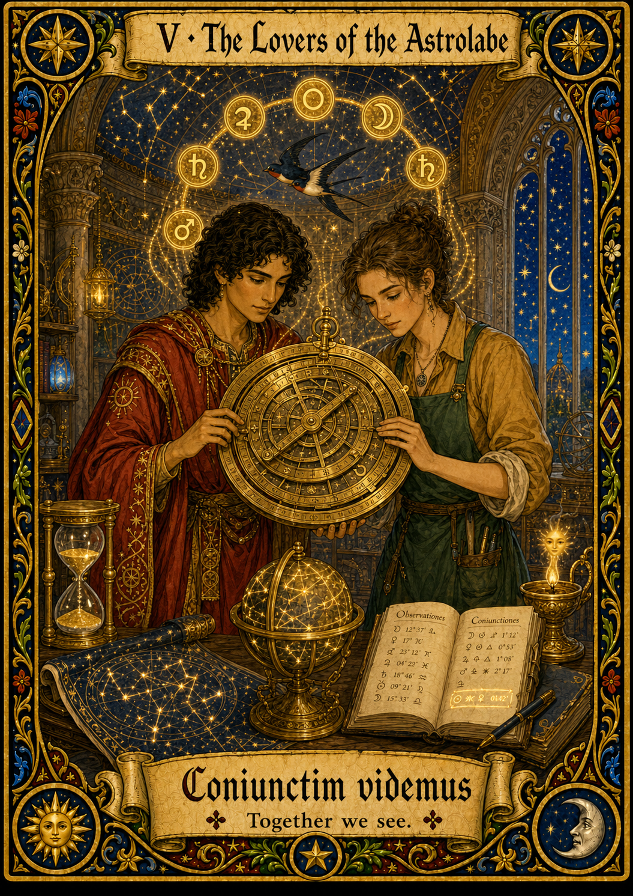

The Tarot archetype
The Lovers card is canonically about aligned choice — two figures whose decisions stay in sync. The romantic reading is the surface; the deeper reading is partnership in pursuit of a shared aim. The card is the cleanest Tarot image of collaboration.
The scientific instrument
The astrolabe — astronomical-navigational instrument used from the 8th to the 17th century. The astrolabe encodes the celestial sphere as a stack of nested rotating brass plates; reading it is a joint act between the instrument and the reader's interpretation. Two hands easily turn the rete; one alone is awkward.
Strength
The most defensible position for daily research work — neither user nor system bears the full burden of correctness.
Signature failure mode
Ambiguity over who decided what. At the end of a long session you may not be able to reconstruct which choices were yours and which were the system's — a real reproducibility risk and a thin foundation for scientific authorship.
How you got here
The survey routes you to this card based on the following signals:
- Q3 mixes narrow and broad operations roughly equally — scope score 1.7–2.3.
- Q11 balances user-control and system-initiative qualities (e.g., "Citations/provenance" + "Code quality" without a strong pull either way).
- Q4 frustrations are present but moderate — the respondent accepts AI work and wants to refine it jointly rather than gate it.
Or share this card directly: lovers.html